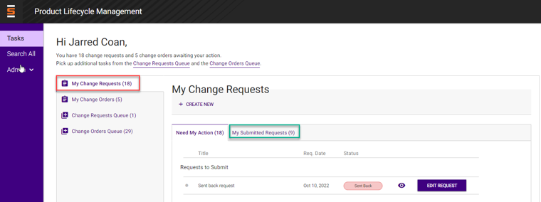

- Manage change requests that need action or change requests you have submitted
-
Need My Action - broken out into 3 sections
- Requests to submit (drafts or requests where approver has sent back)
- Requests to review (needs your change request approval)
- Work Plan to submit (your owned change requests that you need to initiate tasks)
-
My Submitted Requests
- Keep track of requests you initiated that are still open
- Each requests will have eye that opens Change Request Summary page and a call to action button if you are in applicable group
|

|